Example gallery#
The gallery has 13 cards. Twelve are marimo notebooks in the folder
notebooks/ of the repository, and one is a script in examples/. molab, the
free hosted notebook service of marimo, opens each notebook from GitHub and
runs it on a GPU:
Click the molab badge of the card.
Switch on the GPU in the notebook specs.
Run all cells.
Each notebook installs scatterem==0.5.0 from PyPI (the PEP 723 header of the
file), so you need no account, token or local install. Each notebook explains
what it shows, what to look at, and how its numbers differ from the paper. Its
controls (sliders, switches and menus) change the calculation. The image of a
notebook card is a figure of the notebook, made with the default controls.
The footer of a notebook card gives the file, the runtime, the peak GPU memory
(GPU) and the size of the data that the notebook downloads (download).
The script card has no image and no measured numbers; it says where the script
runs. See About the numbers for how we measured them.
FF-STEM#
Paper: S. You et al., Advanced Science 13, e76620 (2026), doi:10.1002/advs.76620. Data: Zenodo record 18008901, CC-BY-4.0 (cite 10.5281/zenodo.18008901). The notebooks download it from a byte-identical copy in the Hugging Face dataset philipp-pelz/public-4dstem, with Zenodo as fallback, and check it by md5. The page FF-STEM explains the method. The page Run the paper’s figure scripts gives the scripts behind the figure notebooks.
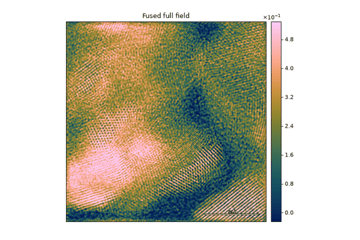
Direct ptychography, tcDF and their fusion, sized to the GPU.

ffstem_demo.py · 18 s · GPU 5.5 GiB · download 0.50 GB
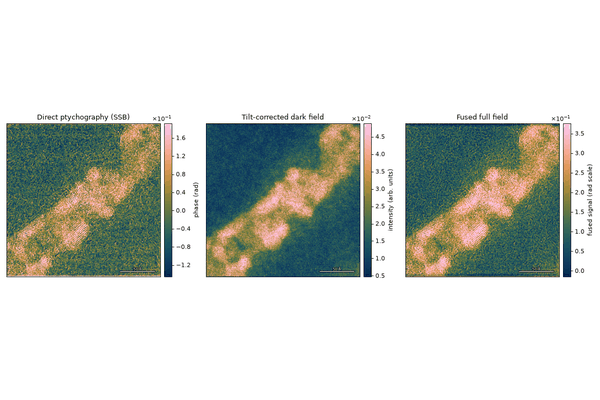
Gd₂O₃ nanoparticles at 60 kV, with a phase-sign control.
fig1_gd2o3.py · 8 s · GPU 19.7 GiB · download 6.6 GB
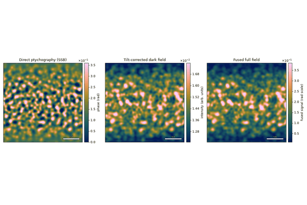
Amorphous carbon at 300 kV: the three images and the SSNR of each channel.
fig2_carbon.py · 6 s · GPU 0.8 GiB · download 0.34 GB
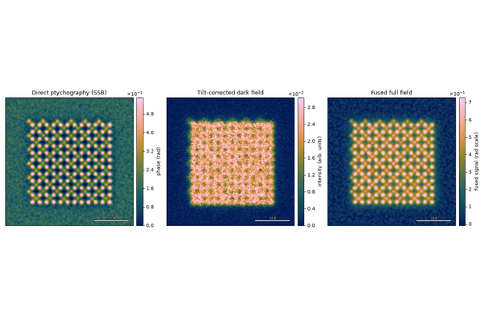
Co₃O₄ at 200 kV.
fig2_co3o4.py · 6 s · GPU 1.2 GiB · download 0.56 GB
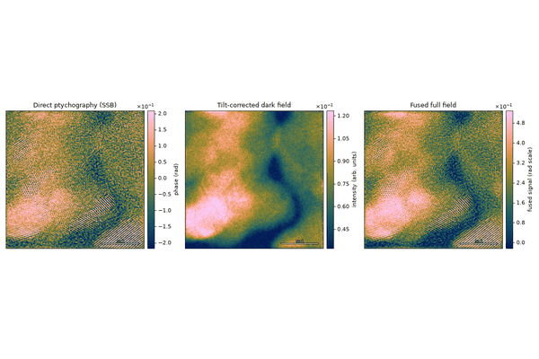
Au nanoparticle at low dose.
fig4_diffraction.py · 17 s · GPU 5.5 GiB · download 0.50 GB
Mixed-state ptychography#
Paper: S. You et al., Transverse quantum-state characterization of programmable electron optics, arXiv:2608.05749 (2026), doi:10.48550/arXiv.2608.05749. Data: Zenodo record 24444109, CC-BY-4.0. The notebook downloads a lossless HDF5 copy of scan 1074 from the Hugging Face dataset and checks it by sha256. The page Mixed-state ptychography explains the method.
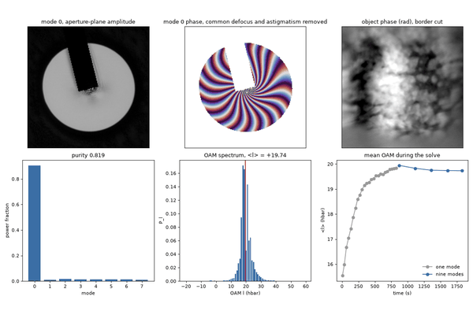
A MEMS phase plate at +1.0 V, on a central crop of scan 1074: preprocessing, a seed from bright-field shifts, a one-mode then a nine-mode solve, the purity, the OAM spectrum and the OAM density matrix.
mems_vortex_scan1074.py · 12.4 min · GPU 19.5 GiB · download 4.7 GB
A script, not a notebook: a two-mode vortex probe on a weak phase object,
reconstructed with secant_gd, one mode then three. It runs on a CPU in a
few minutes. Run python examples/vortex_secant_gd.py in a clone of the
repository.
BiP-PRISM#
Paper: P. Pelz, J. Phys. Mater. (2026), doi:10.1088/2515-7639/aebdd0. The notebooks build their specimens in the notebook. The FePt notebook downloads the atomic model from the data page of its authors. The pages BiP-PRISM and Simulate STEM-EELS explain the method.
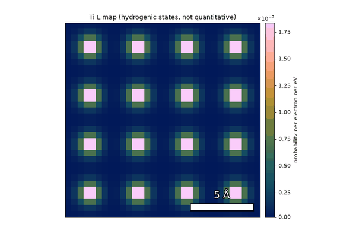
A small Ti L map of SrTiO₃, as on the page Simulate STEM-EELS.
bip_prism_eels_map.py · 5 s · GPU 0.7 GiB · no download
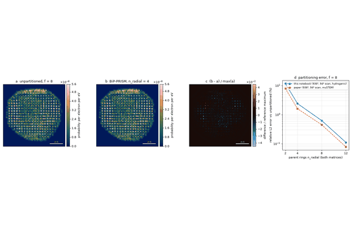
An FePt nanoparticle (23 196 atoms): the Fe L map and the partitioning error against the number of parent rings, at the paper’s 936² grid and 94² scan (f = 8), in full float32 precision.
bip_fept_parents.py · 95 s · GPU 15.6 GiB · download: FePt model of Yang et al., Nature 542, 75 (2017), checked by SHA-256; no explicit licence, cite the paper
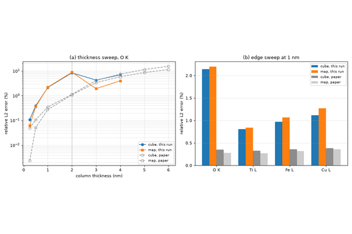
The cube and map error against thickness for O, Ti, Fe and Cu columns, with probe-side partitioning only.
bip_validity_regime.py · 47 s · GPU 8.3 GiB · no download
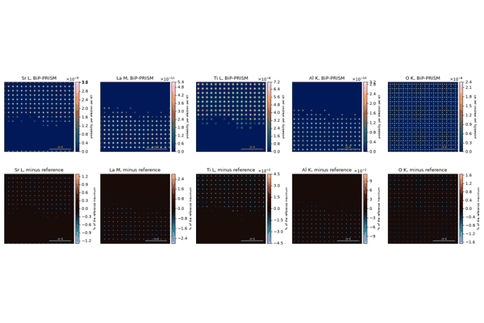
A stepped and intermixed interface: five edges, partitioned against the reference, at the paper’s size (recipe and seed of supplementary S1).
bip_lao_sto_interface.py · 77 s · GPU 13.3 GiB · no download
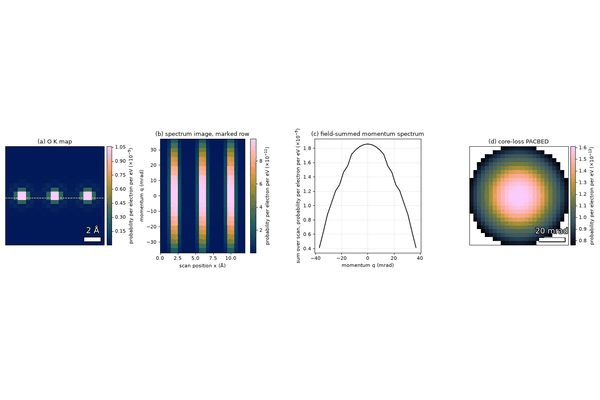
The map, spectrum image, field-summed spectrum, PACBED, energy-momentum stack, and the momentum-sum invariant.
bip_qeels_modes.py · 9 s · GPU 0.8 GiB · no download
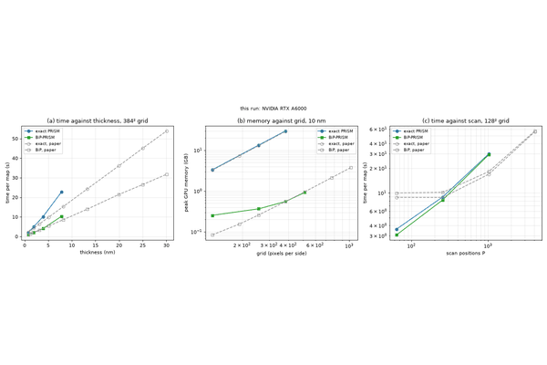
Map scaling, measured live: time against thickness, memory against grid, and time against scan, at reduced ranges.
bip_map_scaling.py · 92 s · GPU 27.8 GiB · no download
About the numbers#
We measured the runtime and the peak GPU memory on an NVIDIA RTX PRO 6000
(96 GB), the GPU of molab, with scatterem 0.4.1 (2026-11-10). The runtime is
the wall time of the whole notebook, with the default controls, from the
Python start to the last cell (the mixed-state notebook: from its GPU check to
the last cell, with scatterem 0.5.0). It includes the imports and the
first-use compilation of the GPU kernels. It does not include the installation
on molab or the dataset download (the data were already on disk). The peak
memory is torch.cuda.max_memory_allocated at the end of the notebook; every
notebook prints it in its last cell.
The FF-STEM figure notebooks use the calls and parameters of the figure scripts
(see Run the paper’s figure scripts). With the default controls,
their three images are the images that the scripts save. The release check
compares the default output of fig2_carbon.py with the release reference.
The BiP-PRISM notebooks run at reduced sizes, so that each one finishes in a few
minutes on one GPU. Each notebook gives its reduction. Since v0.4.0, a map is a
probability per incident electron per eV, and v0.4 builds the transition
potentials from a new first-Born model. The paper’s numbers came from the code
before v0.3. So the notebooks show the relative quantities of the paper
(errors, ratios, scaling exponents) next to the paper’s values, and the absolute
map values differ from the paper. Without GPAW, the notebooks use hydrogenic
states and show the HydrogenicFallbackWarning; see
Simulate STEM-EELS.